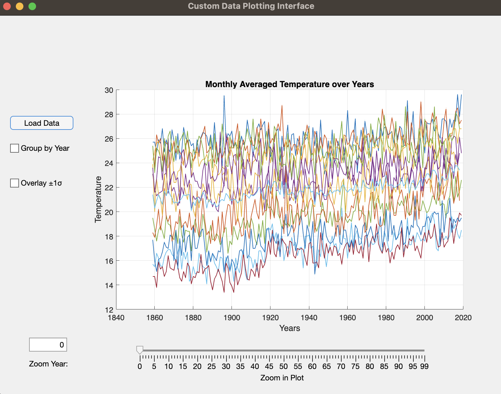

Image editing & Filtering using OpenCV in Python
Enhancing images through filters

This Data Visualization Tool is a user-friendly interface designed to visualize climate data from a .csv file, specifically tailored for
temperature data and easily customizable. Utilizing MATLAB's AppDesigner, this tool empowers users to explore and analyze historical
temperature trends conveniently while showcasing UI Design skills and MATLAB expertise.
Key Features:
- Intuitive User Interface
- Streamlined Data Loading
- Interactive Plotting
- Plot Customization
- Precision Zoom Controls
Key Functionalities:
- Load Data: Users can easily load their climate data from a .csv file, adhering to the specific format provided. The tool ensures error-free loading and parsing, offering a seamless experience.
- Plotting Interface: Upon successful data loading, the tool presents an interactive plotting area where temperature data is displayed. The plot initially shows all temperatures per month, providing a comprehensive overview.
- Grouping by Year Averages: Users have the option to group temperature data by year averages, effectively reducing the plot's size and simplifying the visualization. This feature enhances readability, especially for long-term trend analysis.
- Overlay ±1σ (Standard Deviation): When grouping data by annual averages, users can choose to overlay the standard deviation range (±1σ) on the annual average. This provides insight into temperature variability, aiding in understanding the data's distribution.
- Zoom Functionality: The tool offers custom zoom controls, allowing users to zoom around a center value of interest. By inputting a specific year or using a slider, users can adjust the zoom level while keeping the focus on a particular time period.